Our mission is to understand how neurons perform the computations that enable cognition and consciousness.
Focusing on important stimuli.
Filtering the expected, noticing the unexpected.
Holding information in mind to control thought and action.
PhD students, postdocs, research assistants and undergraduates are welcome to get in touch.
Contact →